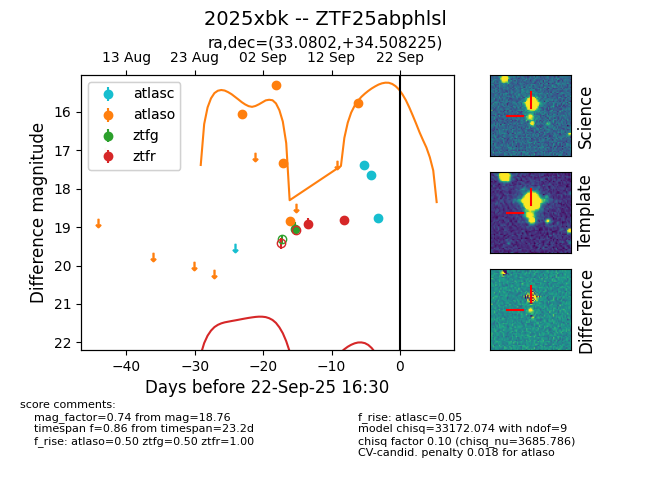
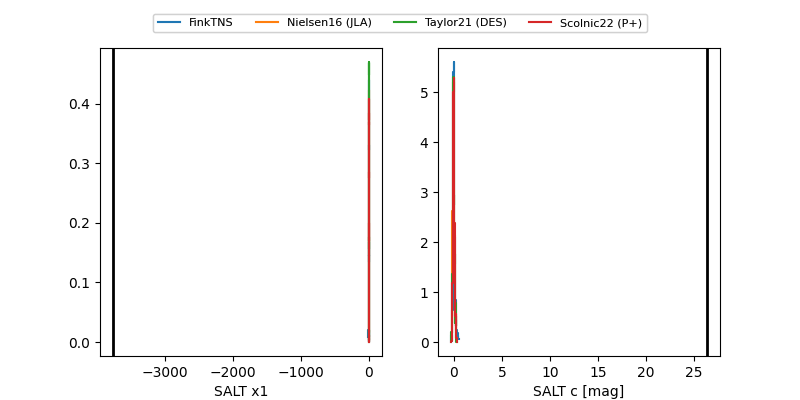

FINK: ZTF25abphlsl
Lasair: ZTF25abphlsl
ALeRCE: ZTF25abphlsl
TNS: 2025xbk
YSE: 2025xbk
ZTF25abphlsl (ztf,fink)
2025xbk (tns,yse)
equatorial (ra, dec) = (33.0802,+34.50823)
galactic (l, b) = (141.3201,-25.45892)


last atlasc=18.76, atlaso=15.77, ztfg=19.04, ztfr=18.82
3 atlasc, 5 atlaso, 1 ztfg, 2 ztfr detections